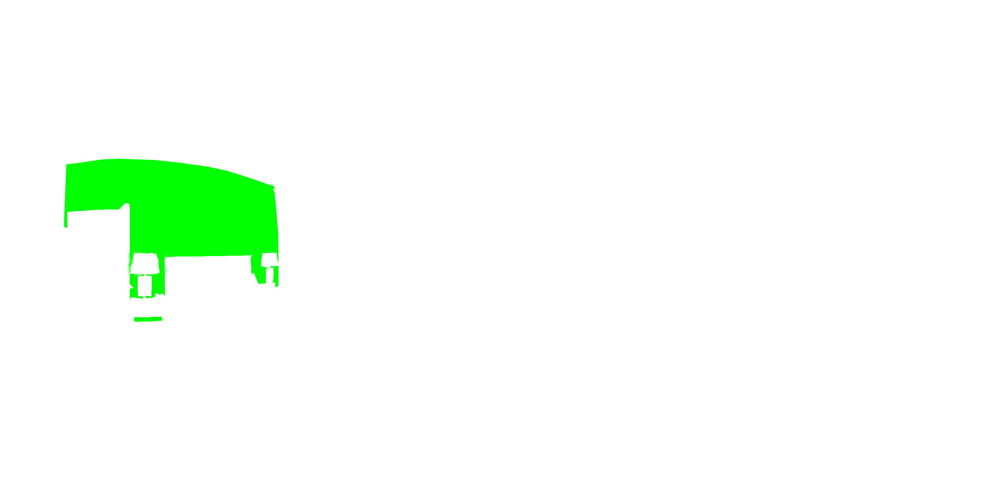
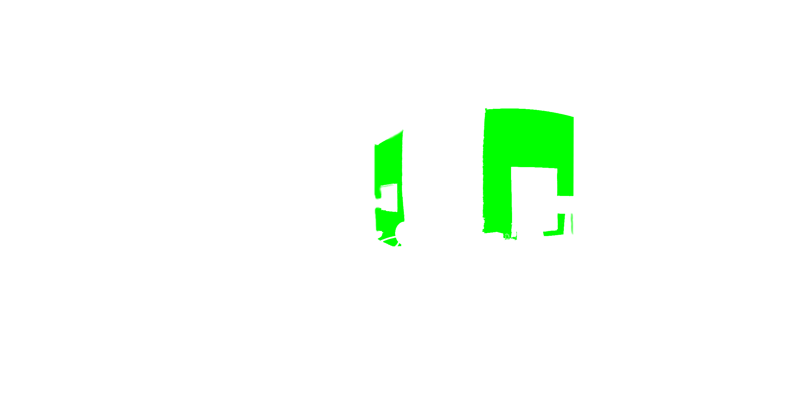
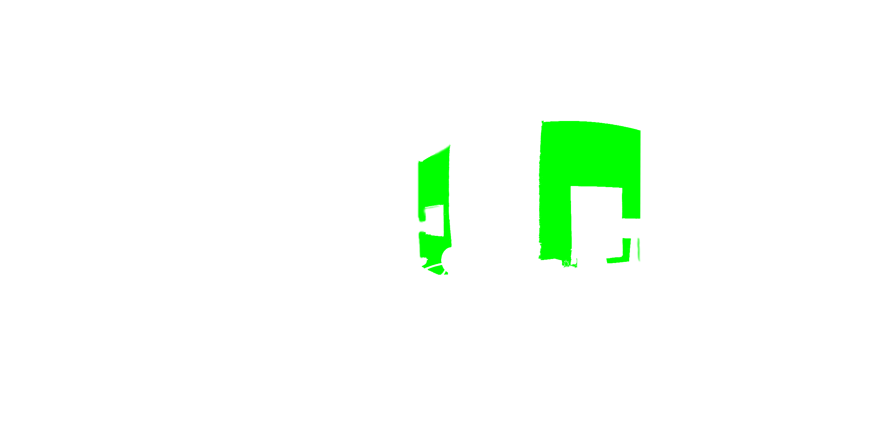

Painting my room with WebVR
2017/03/13
Intro
This month im moving to a new house, and one of the questions that came out was “Which color should i paint the walls?”. I thought it would be nice to have some kind of “prototype” in which i could see how good selection a color would be. I inmediatly remembered that Aframe its the new hot topic, and with a panorama photo, you could see it in 360 degress. So i decided to bake this prototype which you could see a working example here, watch a video here or if you like reading source code without explanation, here. (That’s not actually part of my house because i couldnt take any equirectangular photo, but at least i have a cool prototype working)
Getting the walls separately
The first step was to get an image who works as a 360 degreess image with Aframe, thats a equirectangular photo. Im going to use the following.

The next step was to get some kind of reference for every wall that we want to paint, so i made a transparent image with the same size, but with the actual wall being referenced colored in pure green, some kind of “chroma key” but only for the wall

 


For this example, i ended with 5 images, the actual equirectangular image, and four more one for each wall.
Skeleton and dependencies
First, we create a file called index.html with a simple HTML5 template, and inside our body we insert the following
<script type="text/javascript" src="assets/dat.gui.js"></script>
<script src="https://aframe.io/releases/0.3.2/aframe.min.js"></script>
<script src="assets/app.js"></script>Application code
First, we need to load the images, and paint them to a canvas. To do this im going to use the fetch, to load them, then im going to create a bitmap representation with the createImageBitmap call, and after that, im going to paint that bitmap to a canvas, everything with the new promise ways. We also make an array of those promises.
function ImageBitmapToCanvas( imgBitmap ){
var $canvas = document.createElement('canvas');
$canvas.width = imgBitmap.width;
$canvas.height = imgBitmap.height;
var $ctx = $canvas.getContext('2d');
$ctx.drawImage( imgBitmap, 0, 0 );
return $canvas;
}
var Load = ["img/img.jpg","img/01.png", "img/02.png", "img/03.png", "img/04.png"].map(function( item ){
return fetch(item)
.then( r => r.blob() )
.then( createImageBitmap )
.then( ImageBitmapToCanvas );
});
After every image is loaded, we store our full image for future uses, loop through each “chroma wall” to get and store its imageData, an array filled with four values, rgba, so we can manipulate its color. We create a gui controller to select each color, and we tell our worker to call the setup action. In case of any error, we log the output to the console, its just a prototype.
Promise.all(Load)
.then(function( canvases ){
Handler._canvas = canvases[0];
var WallData = canvases.slice(1).map(function( wall ){
return wall.getContext('2d').getImageData(0, 0, wall.width, wall.height);
});
var i = 0, l = WallData.length;
for( ; i < l; i++){
colors["color" + i] = { r : 0, g : 255, b : 0 };
gui.addColor(colors, "color" + i);
}
worker.postMessage({
action : 'SETUP',
data : WallData
});
})
.catch( console.error );
If you are asking why im using a worker, the answer is because dealing with big immages and lots of lots of pixels, its some heavy computing stuff and i dont want to block the UI, so i prefer to spawn another process for this. But for now, lets explain how we deal with its communication. First we create a new worker with the worker.js file, and when a new message is received, we check if the Hanfler object has the method action, if it has it, we call it with the data passed. Currently, in the main thread, we only have one method, update, which is responsible of showing the final image. First, we make a copy of our main image canvas object, get its 2d context and set its composite method to multiply, thats where almost all the magic happens, the colors of the chroma pages blends making you get a guess of how everything could look. Then we loop through each updatedWalls object, which is a imageData object, make a canvas out of it, and paints it to the main cloned canvas. Finally, we get a blob out of this canvas, creates a url for it, and calls the makeScene method with it. Which is going to append the a-frame tags needed.
function ImageDataToCanvas(data){
var $internalCanvas = document.createElement('canvas');
$internalCanvas.width = data.width;
$internalCanvas.height = data.height;
var $internalCtx = $internalCanvas.getContext('2d');
$internalCtx.putImageData( data, 0, 0 );
return $internalCanvas
}
function cloneCanvas(oldCanvas) {
var newCanvas = document.createElement('canvas');
var context = newCanvas.getContext('2d');
newCanvas.width = oldCanvas.width;
newCanvas.height = oldCanvas.height;
context.drawImage(oldCanvas, 0, 0);
return newCanvas;
}
function makeScene( url ){
var Scene = document.createElement('a-scene');
var Sky = document.createElement('a-sky');
Sky.setAttribute('src', url);
Sky.setAttribute('rotation', '0 -130 0');
Scene.appendChild(Sky);
document.body.appendChild(Scene);
}
var worker = new Worker('worker.js');
worker.addEventListener('message', function( evt ){
var data = evt.data;
if( Handler.hasOwnProperty( data.action ) ){
Handler[ data.action ].call(Handler, data.data);
}
})
var Handler = {
_canvas : [],
UPDATE : function( updatedWalls ){
var newCanvas = cloneCanvas(this._canvas);
var $ctx = newCanvas.getContext('2d');
$ctx.globalCompositeOperation = "multiply";
updatedWalls
.map( ImageDataToCanvas )
.forEach(function( wall ){
$ctx.drawImage(wall, 0, 0);
});
newCanvas.toBlob(function( blob ){
var url = URL.createObjectURL(blob);
makeScene(url);
})
}
};
Finally, we also need a function to delete the scene, and to create the controls of the ui. I think this are pretty straight forward to explain.
var colors = {};
var gui = new dat.gui.GUI();
gui.remember(colors);
gui.__save_row.addEventListener('click', function( evt ){
if( evt.target.className === "button save" ){
var newColors = Object.keys(colors).sort().map(function( key ){
return colors[key];
});
worker.postMessage({
action : 'UPDATE',
data : newColors
});
}
})
document.addEventListener('keyup', function(evt){
if( evt.keyCode == 27 ){
destroyScene();
}
})
function destroyScene(){
var Sky = document.querySelector('a-sky');
var Scene = document.querySelector('a-scene');
if( Scene ){
URL.revokeObjectURL( Sky.getAttribute('src') );
Scene.parentNode.removeChild(Scene)
}
}
Worker code
And this is where all the magic of turning green walls to other colors happens. The communication way its the same. The setup method only stores the data received, which is an array of imageDatas. The update method is where everything happens, it receievs an array with the new colors. It loops through each imageData stored, get the color with the same index, creates a new Uint8ClampedArray, used to create a new imageData, and loop through the original. If its a pure green (0,255,0), changes it to the color wanted, and then return the new one. After all, call the update method in the client with the new imageDatas.
var Handler = {
_DATA : [],
SETUP : function( data ){
this._DATA = data;
},
UPDATE : function( colors ){
console.log("[WORKER] Start new update");
var returnData = this._DATA.map(function( item, index ){
console.log("[WORKER][WALL"+index+"] Start painting");
var newColor = colors[index],
newData = new Uint8ClampedArray( item.data.length ),
i = 0, l = item.data.length;
for( ; i < l; i += 4 ){
var r = item.data[i];
var g = item.data[i+1];
var b = item.data[i+2];
var a = item.data[i+3];
if( r === 0 && g === 255 && b === 0 ){
newData[i] = newColor.r;
newData[i+1] = newColor.g;
newData[i+2] = newColor.b;
newData[i+3] = a;
}else{
newData[i] = r;
newData[i+1] = g;
newData[i+2] = b;
newData[i+3] = a;
}
}
console.log("[WORKER][WALL"+index+"] Finish painting");
return new ImageData(newData, item.width, item.height);
});
console.log("[WORKER] Post back data");
self.postMessage({
action : 'UPDATE',
data : returnData
})
}
};
self.addEventListener('message', function( evt ){
var data = evt.data;
if( Handler.hasOwnProperty( data.action ) ){
Handler[ data.action ].call(Handler, data.data);
}
})
Final thoughts
This is not the best way to accomplish this task, but i think it shows the power the web have nowadays, and it also is IMHO a good example use case of the proposed OffScreenCanvas which would allow this app to run almost entirely in the worker.